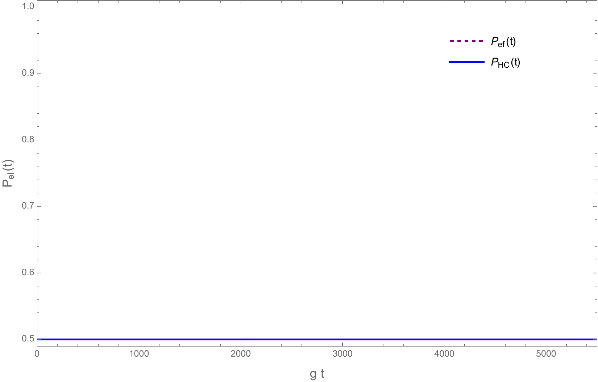
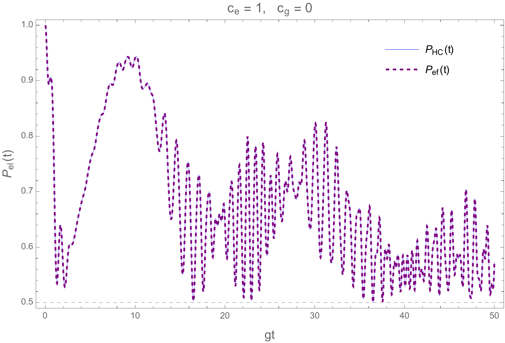
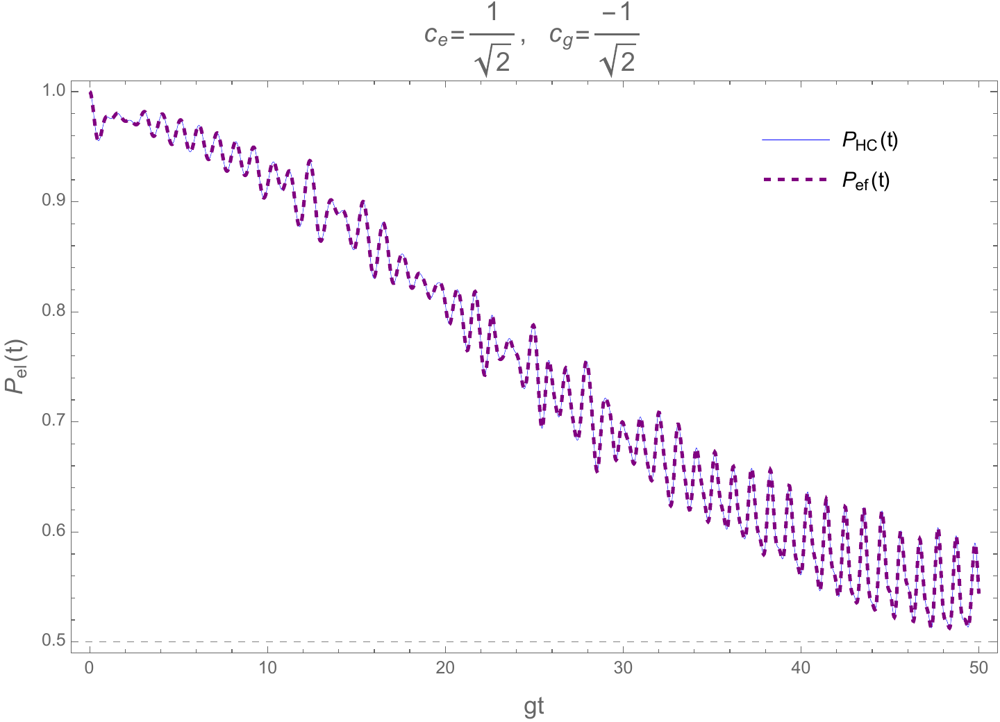

Entrelazamiento en el modelo HC
- Sistema tripartito y biparticiones
- Matrices de densidad reducidas
- Pureza, inversión y coherencia
- Caso 1: fonón en un bloque polaritónico
- Caso 2: estado coherente fonónico
- Caso 3: estados coherentes fotónico y fonónico
- Eigenestados GHZ tripartitos
- Pureza de los estados GHZ
- Generación dinámica de estados GHZ
1. Sistema tripartito y biparticiones
El modelo de Holstein-Cummings contiene tres grados de libertad: el estado electrónico molecular, el modo fotónico de la cavidad y el modo fonónico intramolecular. El espacio de Hilbert completo es, por tanto,
Aunque el sistema es tripartito, primero puede estudiarse como una bipartición entre el electrón y el resto,
$$\mathcal H =\mathcal H_{\mathrm{el}}\otimes \left(\mathcal H_{\mathrm{fot}}\otimes\mathcal H_{\mathrm{fon}}\right).$$Para efectuar esta separación se escribe el estado evolucionado en la representación desplazada agrupando todos los estados fotón-fonón que acompañan a cada estado electrónico:
En el sector dinámico con $n\geq1$ y $m\geq1$, las ramas fotón-fonón son
$$\ket{\chi_g(t)} =\sum_{n=1}^{\infty}\sum_{m=1}^{\infty} \left[p_{nm}^{+}(t)\ket{n,m-1} -p_{nm}^{-}(t)\ket{n,m}\right],$$ $$\ket{\chi_e(t)} =\sum_{n=1}^{\infty}\sum_{m=1}^{\infty} \left[p_{nm}^{+}(t)\ket{n-1,m-1} +p_{nm}^{-}(t)\ket{n-1,m}\right].$$Estos vectores contienen toda la información del campo y de la vibración condicionada a encontrar la molécula en $\ket g$ o en $\ket e$. No tienen que estar normalizados por separado: sus normas son precisamente las probabilidades electrónicas.
2. Matrices de densidad reducidas
Como el estado total es puro, su matriz de densidad es
$$\hat\rho(t)=\ket{\tilde\Psi(t)}\bra{\tilde\Psi(t)}.$$Al desarrollar el producto exterior se obtiene
$$\begin{aligned} \hat\rho(t)={}& \ket{\chi_g}\bra{\chi_g}\otimes\ket g\bra g +\ket{\chi_g}\bra{\chi_e}\otimes\ket g\bra e\\ &+\ket{\chi_e}\bra{\chi_g}\otimes\ket e\bra g +\ket{\chi_e}\bra{\chi_e}\otimes\ket e\bra e. \end{aligned}$$Para estudiar el entrelazamiento entre el electrón y el subsistema fotón-fonón se traza sobre este último:
$$\hat\rho_{\mathrm{el}}(t) =\operatorname{Tr}_{\mathrm{fot,fon}}\!\left[\hat\rho(t)\right].$$Escribiendo la traza parcial de manera explícita en las bases de Fock de ambos modos,
$$\begin{aligned} \hat\rho_{\mathrm{el}}(t) =\sum_{n,m}\Big(&\bra n_{\mathrm{fot}}\otimes \bra m_{\mathrm{fon}}\otimes\mathbf{1}_{\mathrm{el}}\Big) \hat\rho(t)\\ &\times\Big(\ket n_{\mathrm{fot}}\otimes \ket m_{\mathrm{fon}}\otimes\mathbf{1}_{\mathrm{el}}\Big). \end{aligned}$$La identidad $\operatorname{Tr}(\ket u\bra v)=\braket{v|u}$ transforma cada operador fotón-fonón en un producto interno. De esta manera,
$$\begin{aligned} \hat\rho_{\mathrm{el}}(t)={}& \braket{\chi_g|\chi_g}\ket g\bra g +\braket{\chi_e|\chi_g}\ket g\bra e\\ &+\braket{\chi_g|\chi_e}\ket e\bra g +\braket{\chi_e|\chi_e}\ket e\bra e. \end{aligned}$$En la base ordenada $\{\ket g,\ket e\}$,
Los elementos diagonales son las poblaciones electrónicas,
$$p_g(t)=\braket{\chi_g|\chi_g},\qquad p_e(t)=\braket{\chi_e|\chi_e},\qquad p_g+p_e=1.$$Si se traza, en cambio, sobre el electrón, la ortogonalidad $\braket{g|e}=0$ elimina los términos cruzados y deja
Las matrices reducidas de ambos lados de una bipartición de un estado puro tienen el mismo espectro no nulo. Por ello poseen la misma pureza y basta calcular una de las dos.
3. Pureza, inversión y coherencia
La pureza de un subsistema $A$ se define por
$$P(\hat\rho_A)=\operatorname{Tr}(\hat\rho_A^2).$$Para un estado reducido puro, $P=1$ y el subsistema no está entrelazado con el resto. Para un qubit máximamente mezclado, y por tanto máximamente entrelazado con su complemento cuando el estado global es puro, $P=1/2$. Definiendo la coherencia electrónica
la matriz electrónica toma la forma
$$\hat\rho_{\mathrm{el}} =\begin{pmatrix}p_g&s^*\\s&p_e\end{pmatrix}.$$Su cuadrado es
$$\hat\rho_{\mathrm{el}}^2 =\begin{pmatrix} p_g^2+|s|^2 & p_gs^*+p_es^*\\ p_gs+p_es & p_e^2+|s|^2 \end{pmatrix},$$de modo que
$$P_{\mathrm{el}}(t)=p_g^2(t)+p_e^2(t)+2|s(t)|^2.$$El mismo resultado se obtiene al elevar al cuadrado $\hat\rho_{\mathrm{fot-fon}}$ y tomar su traza. También puede escribirse directamente en términos de las normas de las ramas:
$$P_{\mathrm{el}}(t) =\|\chi_g(t)\|^4+\|\chi_e(t)\|^4 +2\left|\braket{\chi_g(t)|\chi_e(t)}\right|^2.$$La inversión electrónica es
$$W(t)=p_e(t)-p_g(t).$$Usando $p_e+p_g=1$, se despejan ambas poblaciones:
$$p_g=\frac{1-W}{2},\qquad p_e=\frac{1+W}{2}.$$Por consiguiente,
$$\begin{aligned} p_g^2+p_e^2 &=\frac14\left[(1-W)^2+(1+W)^2\right]\\ &=\frac14\left(1-2W+W^2+1+2W+W^2\right)\\ &=\frac{1+W^2}{2}. \end{aligned}$$La expresión general para la pureza electrónica queda
Esta ecuación separa dos contribuciones. La inversión mide el desbalance de poblaciones entre $\ket e$ y $\ket g$, mientras que $s(t)$ mide la superposición coherente que permanece entre ambas ramas después de ignorar los grados de libertad fotónico y fonónico.
4. Caso 1: un fonón en un bloque polaritónico
Se considera primero un estado que permanece dentro de un único sub-bloque polaritón-fonón:
$$\ket{\tilde\Psi(t)} =u(t)\ket{+,n,m-1}+v(t)\ket{-,n,m},$$ $$|u(t)|^2+|v(t)|^2=1.$$Los polaritones del bloque $n$ son $\ket{\pm,n}=(\ket{e,n-1}\pm\ket{g,n})/\sqrt2$. Al sustituirlos,
$$\begin{aligned} \ket{\tilde\Psi(t)}={}& \frac{u(t)}{\sqrt2} \left(\ket{e,n-1}+\ket{g,n}\right)\ket{m-1}\\ &+\frac{v(t)}{\sqrt2} \left(\ket{e,n-1}-\ket{g,n}\right)\ket m. \end{aligned}$$Agrupando los términos electrónicos se obtiene
$$\begin{aligned} \ket{\tilde\Psi(t)}={}& \frac{1}{\sqrt2}\ket e\ket{n-1} \left[u(t)\ket{m-1}+v(t)\ket m\right]\\ &+\frac{1}{\sqrt2}\ket g\ket n \left[u(t)\ket{m-1}-v(t)\ket m\right]. \end{aligned}$$Por tanto, las ramas que acompañan a los estados electrónicos son
$$\ket{\chi_e(t)} =\frac{\ket{n-1}}{\sqrt2} \left[u(t)\ket{m-1}+v(t)\ket m\right],$$ $$\ket{\chi_g(t)} =\frac{\ket n}{\sqrt2} \left[u(t)\ket{m-1}-v(t)\ket m\right].$$La normalización de $u$ y $v$ y la ortogonalidad de los estados de Fock fonónicos dan
$$p_e=\braket{\chi_e|\chi_e} =\frac12\left(|u|^2+|v|^2\right)=\frac12,$$ $$p_g=\braket{\chi_g|\chi_g}=\frac12.$$La coherencia es nula porque las dos ramas contienen números de fotones distintos:
$$s(t)=\braket{\chi_g|\chi_e} \propto\braket{n|n-1}=0.$$En consecuencia, $W(t)=p_e-p_g=0$ y
No es necesario que el estado inicial sea un eigenestado del hamiltoniano efectivo. El resultado vale para cualquier evolución que permanezca en el mismo doblete $\{\ket{+,n,m-1},\ket{-,n,m}\}$.

5. Caso 2: estado coherente fonónico en un bloque polaritónico
Se fija ahora un bloque polaritónico $n$, pero el modo vibracional ocupa una superposición de muchos estados de Fock. El estado evolucionado tiene la forma
$$\ket{\tilde\Psi_n(t)} =p_{n0}^{-}(t)\ket{-,n,0} +\sum_{m=1}^{\infty} \left[p_{nm}^{+}(t)\ket{+,n,m-1} +p_{nm}^{-}(t)\ket{-,n,m}\right].$$El primer término es el sector fonónico de borde. Al expandir los polaritones en la base electrónica desnuda,
$$\begin{aligned} \ket{\tilde\Psi_n(t)}={}& \frac{p_{n0}^{-}(t)}{\sqrt2} \left(\ket{e,n-1}-\ket{g,n}\right)\ket0\\ &+\frac{1}{\sqrt2}\sum_{m=1}^{\infty}p_{nm}^{+}(t) \left(\ket{e,n-1}+\ket{g,n}\right)\ket{m-1}\\ &+\frac{1}{\sqrt2}\sum_{m=1}^{\infty}p_{nm}^{-}(t) \left(\ket{e,n-1}-\ket{g,n}\right)\ket m. \end{aligned}$$Los términos que multiplican a $\ket e$ forman la rama
$$\begin{aligned} \ket{\chi_e(t)} =\frac{\ket{n-1}}{\sqrt2}\Bigg[ p_{n0}^{-}(t)\ket0 +\sum_{m=1}^{\infty}p_{nm}^{+}(t)\ket{m-1} +\sum_{m=1}^{\infty}p_{nm}^{-}(t)\ket m\Bigg]. \end{aligned}$$En la primera suma se introduce $k=m-1$, mientras que en la segunda solo se cambia el nombre del índice $m\to k$. Incluyendo el término de borde en $p_{n,0}^{-}$ resulta
De manera análoga, la rama del estado base es
Puede definirse la amplitud asociada al estado fotón-fonón $\ket{n-1,k}$ como
$$E_k(t)=\frac{p_{n,k+1}^{+}(t)+p_{n,k}^{-}(t)}{\sqrt2},$$y la amplitud asociada a $\ket{n,k}$ como
$$G_k(t)=\frac{p_{n,k+1}^{+}(t)-p_{n,k}^{-}(t)}{\sqrt2}.$$De nuevo, las ramas electrónicas contienen números de fotones ortogonales, $\braket{n|n-1}=0$. Por ello $s(t)=0$, la matriz electrónica es diagonal y la pureza queda determinada únicamente por la inversión:
La inversión aparece por interferencia entre amplitudes de dobletes fonónicos adyacentes. Sustituyendo $E_k$ y $G_k$ en $W_n=p_e-p_g$ se obtiene

6. Caso 3: estados coherentes fotónico y fonónico
Cuando tanto el modo fotónico como el fonónico comienzan en estados coherentes aparecen muchos valores de $n$. Las ramas electrónicas ya pueden compartir estados fotón-fonón con las mismas etiquetas, de modo que la coherencia $s(t)$ no tiene por qué anularse.
Reuniendo las amplitudes de ambas ramas en la base fotón-fonón $\{\ket{q,k}\}$ se definen
$$E_{qk}(t) =\frac{p_{q,k+1}^{+}(t)+p_{q,k}^{-}(t)}{\sqrt2},\qquad G_{qk}(t) =\frac{p_{q,k+1}^{+}(t)-p_{q,k}^{-}(t)}{\sqrt2}.$$Aquí $q$ etiqueta el sector fotónico después de reagrupar las ramas en una base común. Entonces
$$\ket{\chi_e(t)}=\sum_{q,k}E_{qk}(t)\ket{q,k},\qquad \ket{\chi_g(t)}=\sum_{q,k}G_{qk}(t)\ket{q,k}.$$Las poblaciones electrónicas son
$$p_e(t)=\sum_{q,k}|E_{qk}(t)|^2,\qquad p_g(t)=\sum_{q,k}|G_{qk}(t)|^2,$$y la coherencia reducida es
$$s(t)=\sum_{q,k}G_{qk}^{*}(t)E_{qk}(t).$$La pureza conserva la forma general
La expresión es analítica, pero contiene sumas dobles y las frecuencias $\Omega_{nm}^{\mathrm{ef}}$ dependen de manera no lineal de $n$ y $m$. En general no existe una suma cerrada y las series deben evaluarse con un truncamiento numérico que abarque las distribuciones coherentes.


7. Entrelazamiento tripartito y eigenestados GHZ
El sistema posee tres grados de libertad. Los espacios de la cavidad y la vibración son infinitodimensionales, pero dentro de un doblete fijo $(n,m)$ solo intervienen dos estados de cada subsistema:
$$\mathcal H_{\mathrm{el}}=\operatorname{span}\{\ket e,\ket g\},$$ $$\mathcal H_{\mathrm{cav}}^{(n)} =\operatorname{span}\{\ket{n-1},\ket n\},$$ $$\mathcal H_{\mathrm{vib}}^{(m)} =\operatorname{span}\{\ket{m-1},\ket m\}.$$Por ello, el subespacio efectivo se comporta como tres qubits codificados:
$$\tilde{\mathcal H}_{\mathrm{ef}}^{(n,m)} \subset\mathbb C_{mathrm{el}}^2\otimes \mathbb C_{mathrm{cav}}^2\otimes \mathbb C_{mathrm{vib}}^2.$$El qubit electrónico es un sistema físico de dos niveles. Los qubits fotónico y vibracional están codificados en pares de estados de Fock consecutivos. Los eigenestados del hamiltoniano efectivo son
$$\ket{E_{nm}^{+}} =\mathcal C_{nm}\ket{+,n,m-1} -\mathcal S_{nm}\ket{-,n,m},$$ $$\ket{E_{nm}^{-}} =\mathcal S_{nm}\ket{+,n,m-1} +\mathcal C_{nm}\ket{-,n,m},$$con
$$\mathcal C_{nm} =\sqrt{\frac{\Omega_{nm}^{\mathrm{ef}}+\delta_n} {2\Omega_{nm}^{\mathrm{ef}}}},\qquad \mathcal S_{nm} =\sqrt{\frac{\Omega_{nm}^{\mathrm{ef}}-\delta_n} {2\Omega_{nm}^{\mathrm{ef}}}}.$$En resonancia polaritón-fonón, $\delta_n=0$, ambos coeficientes de mezcla valen $1/\sqrt2$. Los eigenestados se reducen a
$$\ket{E_{nm}^{+}} =\frac{\ket{+,n,m-1}-\ket{-,n,m}}{\sqrt2},$$ $$\ket{E_{nm}^{-}} =\frac{\ket{+,n,m-1}+\ket{-,n,m}}{\sqrt2}.$$Regresando a la base electrónica, fotónica y fonónica,
$$\begin{aligned} \ket{E_{nm}^{+}} ={}&\frac12\Big( \ket{e,n-1,m-1}+\ket{g,n,m-1}\\ &\hspace{2.4cm}-\ket{e,n-1,m}+\ket{g,n,m}\Big)\\ ={}&\ket e\ket{n-1}\frac{\ket{m-1}-\ket m}{2} +\ket g\ket n\frac{\ket{m-1}+\ket m}{2}, \end{aligned}$$ $$\begin{aligned} \ket{E_{nm}^{-}} ={}&\frac12\Big( \ket{e,n-1,m-1}+\ket{g,n,m-1}\\ &\hspace{2.4cm}+\ket{e,n-1,m}-\ket{g,n,m}\Big)\\ ={}&\ket e\ket{n-1}\frac{\ket{m-1}+\ket m}{2} +\ket g\ket n\frac{\ket{m-1}-\ket m}{2}. \end{aligned}$$Se introducen los estados vibracionales
$$\ket{\phi_m^{\pm}} =\frac{\ket{m-1}\pm\ket m}{\sqrt2}.$$Con esta notación,
Estos estados son de tipo Greenberger-Horne-Zeilinger. En cada término de la superposición cambian simultáneamente los estados electrónico, fotónico y vibracional. Los dos términos son ortogonales en cada subsistema, pues
$$\braket{e|g}=0,\qquad \braket{n-1|n}=0,$$ $$\begin{aligned} \braket{\phi_m^{-}|\phi_m^{+}} &=\frac12(\bra{m-1}-\bra m)(\ket{m-1}+\ket m)\\ &=\frac12(1+0-0-1)=0. \end{aligned}$$Definiendo los estados lógicos
$$\ket0_{\mathrm{el}}=\ket e,\quad \ket1_{\mathrm{el}}=\ket g,$$ $$\ket0_{\mathrm{cav}}=\ket{n-1},\quad \ket1_{\mathrm{cav}}=\ket n,$$ $$\ket0_{\mathrm{vib}}=\ket{\phi_m^{-}},\quad \ket1_{\mathrm{vib}}=\ket{\phi_m^{+}},$$se obtiene
El otro eigenestado es $(\ket{001}+\ket{110})/\sqrt2$ con esta elección de estados lógicos y es localmente equivalente al GHZ canónico mediante una compuerta $\hat X$ aplicada al qubit vibracional.
8. Pureza reducida de los estados GHZ
Para hacer explícito el carácter multipartito se divide el sistema en las biparticiones
$$\mathrm{vib}\,|\,(\mathrm{el,cav}),\qquad \mathrm{cav}\,|\,(\mathrm{el,vib}),\qquad \mathrm{el}\,|\,(\mathrm{cav,vib}).$$Esto no afirma que cada pareja esté entrelazada por sí misma. Significa que cada subsistema individual está máximamente entrelazado con los otros dos considerados como un único sistema compuesto.
Para $\ket{E_{nm}^{+}}$, la matriz de densidad total contiene cuatro términos. Al trazar sobre el electrón, los términos cruzados desaparecen por $\braket{e|g}=0$ y queda
$$\hat\rho_{\mathrm{cav-vib}} =\frac12\left( \ket{n-1,\phi_m^{-}}\bra{n-1,\phi_m^{-}} +\ket{n,\phi_m^{+}}\bra{n,\phi_m^{+}} \right).$$Los dos proyectores son ortogonales. Al elevar al cuadrado,
$$\hat\rho_{\mathrm{cav-vib}}^2 =\frac14\left( \ket{n-1,\phi_m^{-}}\bra{n-1,\phi_m^{-}} +\ket{n,\phi_m^{+}}\bra{n,\phi_m^{+}} \right),$$y su pureza es
Trazar sobre cualquiera de los otros subsistemas produce el mismo valor. Cada qubit codificado tiene una matriz reducida máximamente mezclada. En cambio, las matrices de dos qubits obtenidas al descartar el tercero son mezclas clásicas de dos productos ortogonales y no contienen entrelazamiento bipartito. Esta es la estructura característica de un GHZ: el entrelazamiento reside genuinamente en la partición tripartita.
9. Generación dinámica de estados GHZ
Se considera un estado polaritónico que evoluciona bajo el hamiltoniano efectivo del doblete $(n,m)$,
$$\hat H_{\mathrm{ef}}^{(n,m)} =\hbar A_{nm}\mathbf{1} +\frac{\hbar}{2} \left(\delta_n\hat\sigma_z-\kappa_m\hat\sigma_x\right),$$en la base $\{\ket{+,n,m-1},\ket{-,n,m}\}$, donde
$$\kappa_m=\nu\lambda\sqrt m,\qquad \Omega_{nm}^{\mathrm{ef}} =\sqrt{\delta_n^2+\kappa_m^2}.$$El operador de evolución es
$$\hat U_{nm}(t) =\exp\left(-\frac{i}{\hbar}\hat H_{\mathrm{ef}}^{(n,m)}t\right).$$Como el término proporcional a la identidad conmuta con el resto, la exponencial se factoriza:
$$\hat U_{nm}(t) =e^{-iA_{nm}t} \exp\left[-\frac{i}{2} \left(\delta_n\hat\sigma_z-\kappa_m\hat\sigma_x\right)t\right].$$Definiendo
$$\hat M_{nm}=\delta_n\hat\sigma_z-\kappa_m\hat\sigma_x,$$y usando $\hat\sigma_z^2=\hat\sigma_x^2=\mathbf1$ junto con $\{\hat\sigma_z,\hat\sigma_x\}=0$, se obtiene
$$\hat M_{nm}^2 =\left(\delta_n^2+\kappa_m^2\right)\mathbf{1} =\left(\Omega_{nm}^{\mathrm{ef}}\right)^2\mathbf{1}.$$Por tanto, sus potencias pares e impares satisfacen
$$\hat M_{nm}^{2q} =\left(\Omega_{nm}^{\mathrm{ef}}\right)^{2q}\mathbf{1},$$ $$\hat M_{nm}^{2q+1} =\left(\Omega_{nm}^{\mathrm{ef}}\right)^{2q}\hat M_{nm}.$$Separando la serie de la exponencial en potencias pares e impares,
$$\begin{aligned} \exp\left(-\frac{i}{2}\hat M_{nm}t\right) ={}&\sum_{q=0}^{\infty} \frac{(-1)^q}{(2q)!} \left(\frac{\Omega_{nm}^{\mathrm{ef}}t}{2}\right)^{2q}\mathbf{1}\\ &-i\frac{\hat M_{nm}}{\Omega_{nm}^{\mathrm{ef}}} \sum_{q=0}^{\infty} \frac{(-1)^q}{(2q+1)!} \left(\frac{\Omega_{nm}^{\mathrm{ef}}t}{2}\right)^{2q+1}. \end{aligned}$$Las dos series son el coseno y el seno, respectivamente:
Se parte del estado $\ket{\tilde\Psi(0)}=\ket{+,n,m-1}$. En la base del doblete,
$$\hat\sigma_z\ket{+,n,m-1}=\ket{+,n,m-1},$$ $$\hat\sigma_x\ket{+,n,m-1}=\ket{-,n,m}.$$La evolución es entonces
$$\begin{aligned} \ket{\tilde\Psi(t)}=e^{-iA_{nm}t}\Bigg\{& \left[ \cos\left(\frac{\Omega_{nm}^{\mathrm{ef}}t}{2}\right) -i\frac{\delta_n}{\Omega_{nm}^{\mathrm{ef}}} \sin\left(\frac{\Omega_{nm}^{\mathrm{ef}}t}{2}\right) \right]\ket{+,n,m-1}\\ &+i\frac{\kappa_m}{\Omega_{nm}^{\mathrm{ef}}} \sin\left(\frac{\Omega_{nm}^{\mathrm{ef}}t}{2}\right) \ket{-,n,m}\Bigg\}. \end{aligned}$$Quitando la fase global, se definen
$$a(t)=\cos\left(\frac{\Omega_{nm}^{\mathrm{ef}}t}{2}\right) -i\frac{\delta_n}{\Omega_{nm}^{\mathrm{ef}}} \sin\left(\frac{\Omega_{nm}^{\mathrm{ef}}t}{2}\right),$$ $$b(t)=i\frac{\kappa_m}{\Omega_{nm}^{\mathrm{ef}}} \sin\left(\frac{\Omega_{nm}^{\mathrm{ef}}t}{2}\right).$$Así,
$$\ket{\tilde\Psi(t)} =a(t)\ket{+,n,m-1}+b(t)\ket{-,n,m}.$$Al regresar a la base desnuda,
$$\begin{aligned} \ket{\tilde\Psi(t)}=\frac1{\sqrt2}\Big[& \ket e\ket{n-1}\left(a(t)\ket{m-1}+b(t)\ket m\right)\\ &+\ket g\ket n\left(a(t)\ket{m-1}-b(t)\ket m\right)\Big]. \end{aligned}$$Los estados vibracionales que acompañan a las dos ramas electrónicas son
$$\ket{\xi_e(t)}=a(t)\ket{m-1}+b(t)\ket m,$$ $$\ket{\xi_g(t)}=a(t)\ket{m-1}-b(t)\ket m.$$Su producto interno vale
$$\braket{\xi_g(t)|\xi_e(t)}=|a(t)|^2-|b(t)|^2.$$Para obtener un GHZ máximo se requiere que estas ramas sean ortogonales. Como $|a|^2+|b|^2=1$, la condición $|a|^2-|b|^2=0$ equivale a
En resonancia, $\delta_n=0$ y $\Omega_{nm}^{\mathrm{ef}}=\kappa_m$. El estado se simplifica a
$$\ket{\tilde\Psi(t)}=e^{-iA_{nm}t} \left[ \cos\left(\frac{\kappa_mt}{2}\right)\ket{+,n,m-1} +i\sin\left(\frac{\kappa_mt}{2}\right)\ket{-,n,m} \right].$$Las probabilidades polaritónicas son
$$P_+(t)=\cos^2\left(\frac{\kappa_mt}{2}\right),\qquad P_-(t)=\sin^2\left(\frac{\kappa_mt}{2}\right).$$Ambas valen $1/2$ cuando
$$\frac{\kappa_mt}{2}=\frac{(2q+1)\pi}{4},\qquad q=0,1,2,\ldots$$Por tanto, los tiempos de generación de GHZ son
Para el primer tiempo, y omitiendo la fase global, el estado en la base desnuda es
Los dos estados vibracionales son ortogonales, al igual que los estados electrónicos y fotónicos. El estado es, por tanto, un GHZ canónico salvo fases locales. Partiendo de un polaritón puro, el hamiltoniano efectivo produce un estado GHZ en cada tiempo $t_q^{\mathrm{GHZ}}$.